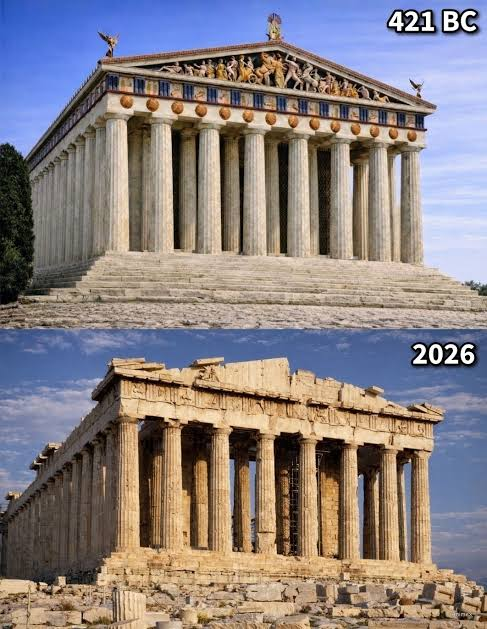
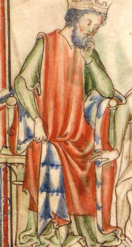
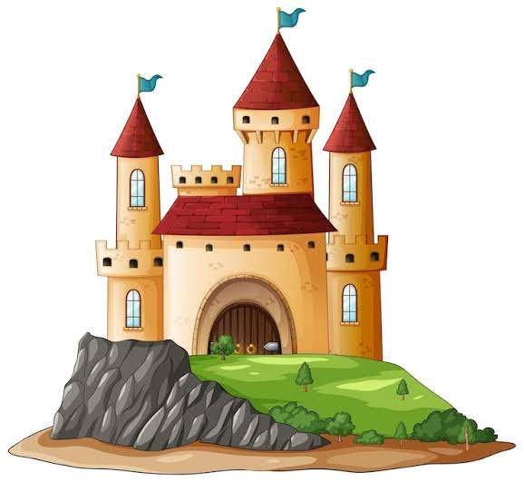
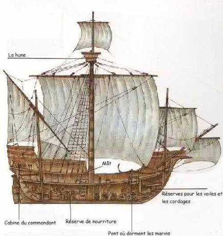
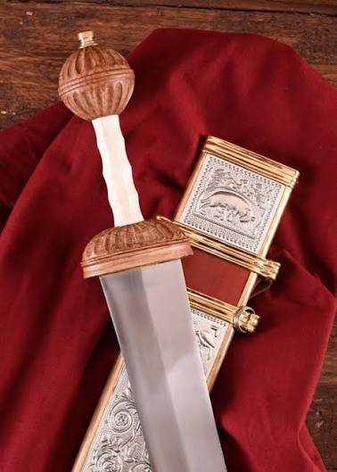
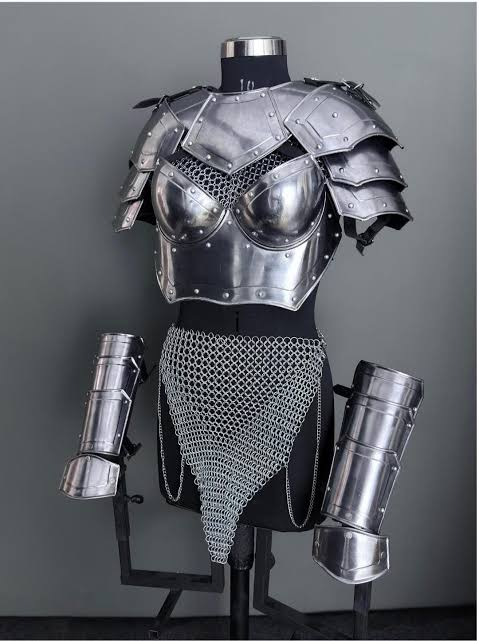
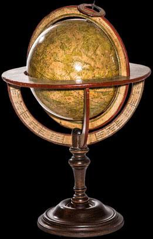
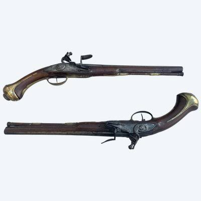

Античность
Период: VIII в. до н.э. — V в. н.э.
Ключевые события: Расцвет полисов, создание Римского государства.


Период: VIII в. до н.э. — V в. н.э.
Ключевые события: Расцвет полисов, создание Римского государства.

Период: V — XV века
Ключевые события: Великое переселение народов, эпоха рыцарей.

Период: Конец XV — начало XX века
Ключевые события: Промышленный переворот, научные открытия.

Век: I в. н.э.

Век: XIV в.

Век: XVI в.

Век: XVIII в.
Интерактивная хронология исторических событий. Вы можете добавлять и удалять события, а также изменять тему страницы.
476 год
800 год
1492 год